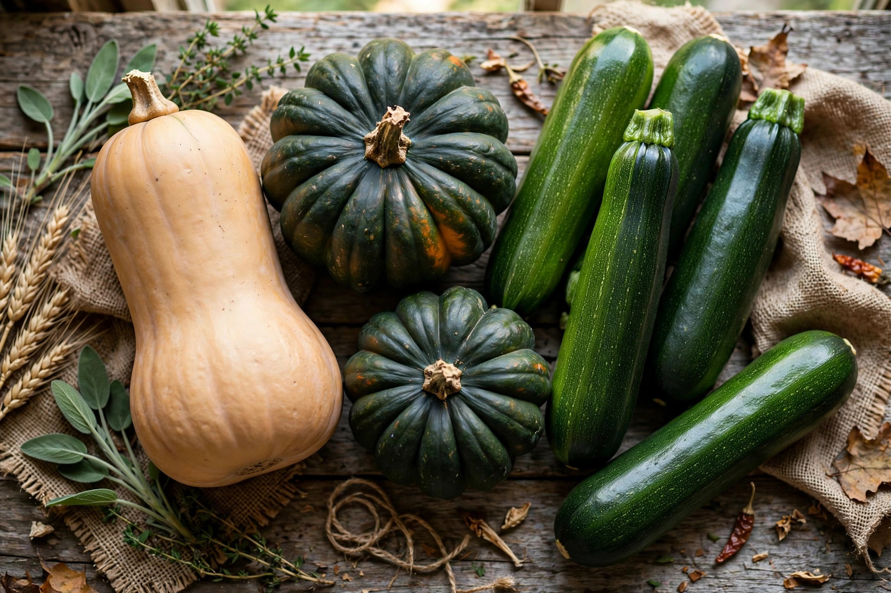

From Wikipedia, the free encyclopedia
| Squash | |
|---|---|
 | |
| Kingdom | Plantae |
| Order | Cucurbitales |
| Family | Cucurbitaceae |
| Genus | Cucurbita |
Squash are herbaceous trailing vines or shrubs in the genus Cucurbita, part of the gourd family Cucurbitaceae alongside cucumbers, melons, and pumpkins. Squashes are grown worldwide for their edible fruit, which is typically harvested either immature (summer squash, such as zucchini) or fully ripe with a hard rind (winter squash, such as butternut and acorn squash).
Squashes are among the oldest cultivated plants in the Americas. Archaeological evidence from caves in Oaxaca, Mexico, suggests Cucurbita pepo was domesticated roughly 8,000–10,000 years ago, making it one of the earliest domesticated species in the New World. Together with maize and beans, squash formed the "Three Sisters" companion planting system central to Indigenous agriculture in North America. After European contact in the late 15th century, squashes spread rapidly through the Mediterranean and Asia.
Five domesticated species are widely grown: Cucurbita pepo (zucchini, acorn squash, most pumpkins), C. maxima (buttercup, Hubbard, kabocha), C. moschata (butternut), C. argyrosperma (cushaw), and C. ficifolia (fig-leaf gourd). Summer squashes are eaten with their soft skin and seeds; winter squashes store for months and are rich in beta-carotene.
Squash flesh, blossoms, seeds, and young leaves are all edible. The blossoms are stuffed and fried in Italian and Mexican cooking; the seeds (pepitas) are toasted as a snack. Winter squash is commonly roasted, pureed into soups, or used in pies.